We believe security software like Kicksecure needs to remain Open Source and independent. Would you help sustain and grow the project? Learn more about our 14 year success story and maybe DONATE!
Official Online ProfilesDocumentationVirtualBox/InstallerPrevious page: Official Online ProfilesIndex page: DocumentationNext page: VirtualBox/InstallerWiki Enhancements
Our wikis have undergone multiple enhancements that are neither part of the vanilla MediaWiki software nor its extensions. With these enhancements we make our wikis more accessible, more readable, more user friendly and more feature rich. On this page we would like to give you an overview.
Our own original upgrades
- Individual Header and Footer with modern menu functionality
- CodeSelect Boxes with Syntax Highlighting
- Our compact TOC variant with expandable levels and saved user preferences
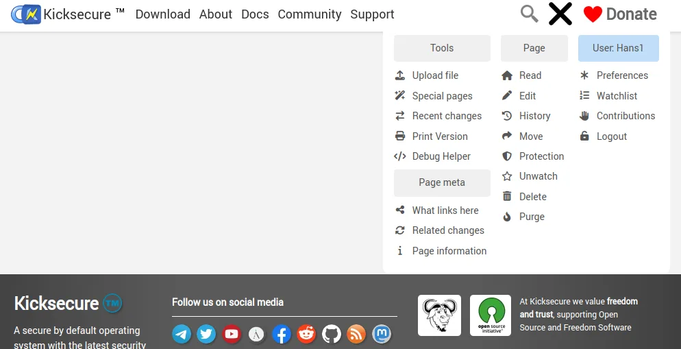 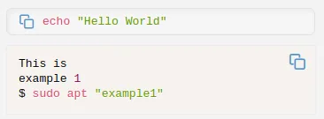 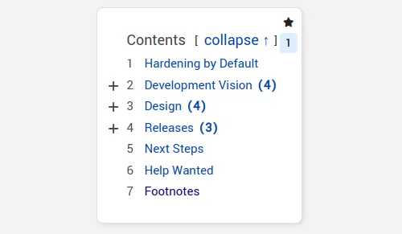
- We don't use tracking scripts
- We don't use tracking cookies
- We offer an Onion version of every wiki website
No
tracking
scripts 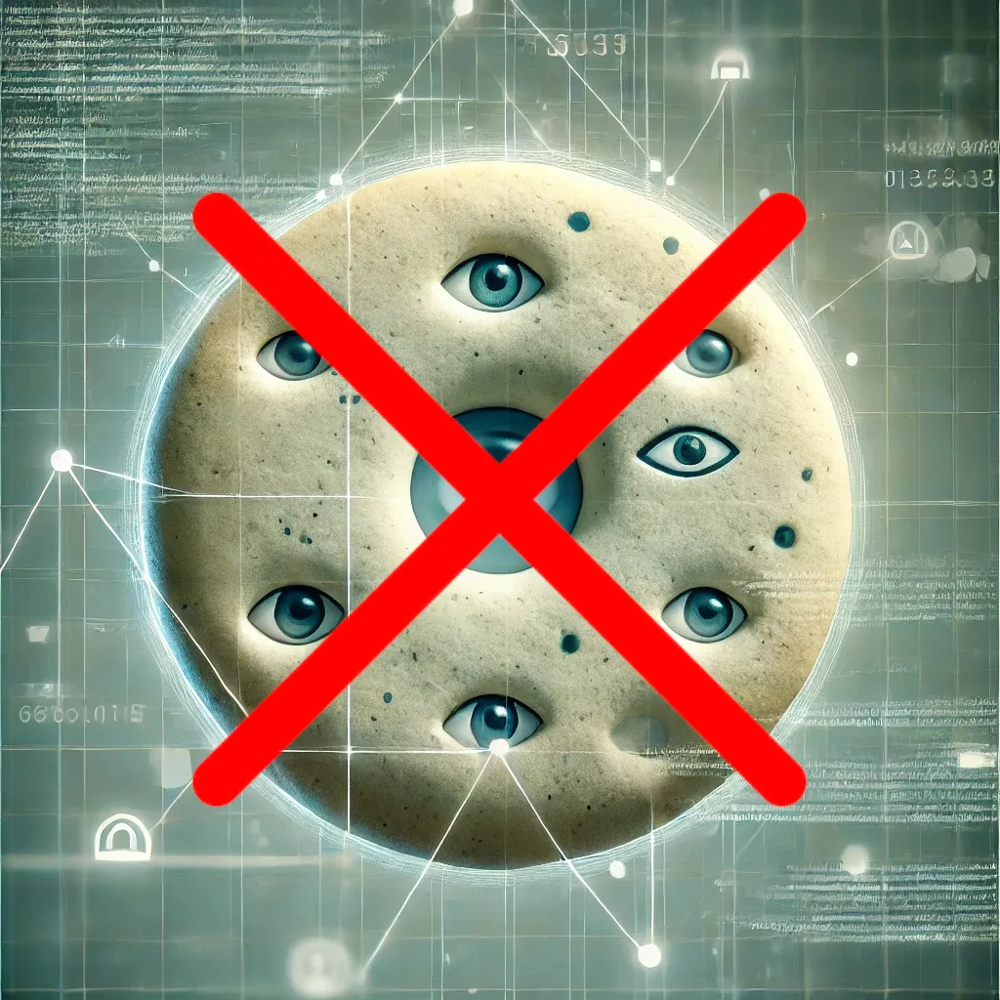 Onion
Website
Onion
Website
- Modals which are practical and wiki compatible
- Our modern Search Modal
- Our Table Expand Modal and Button for enhanced table viewing
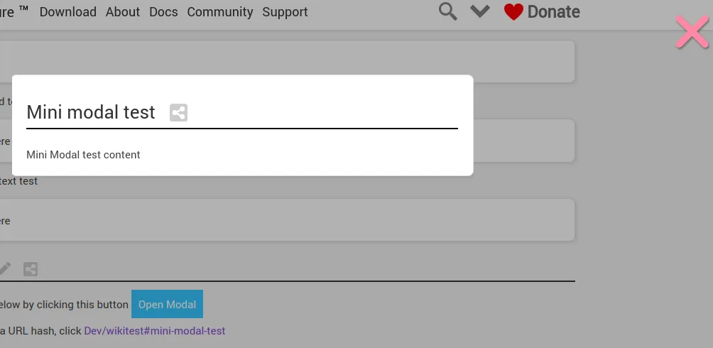 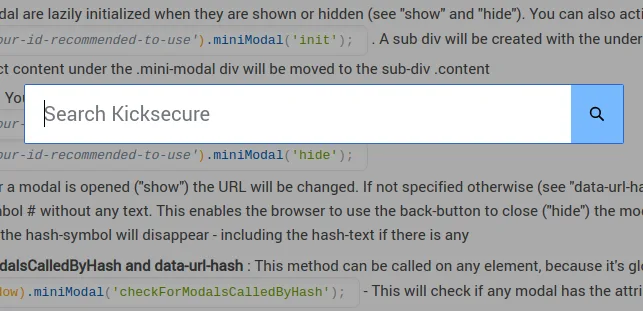 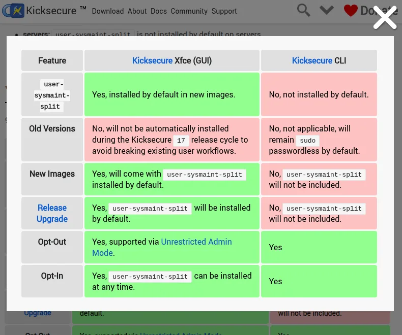
- A Share Tooltip for all headlines where the direct link can be shared easily on many platforms or for private or wiki use
- Sliders (carousels)
- Beautiful graphical Icon Bullet Lists
- Feature-rich, nojs compatible Tab Content Controller for switching between content
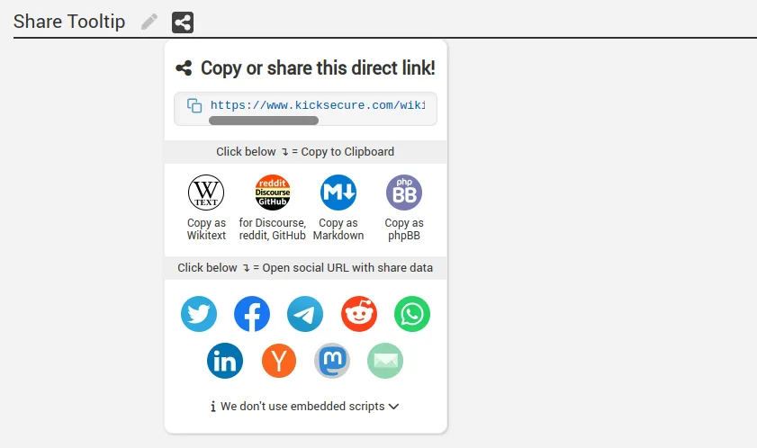 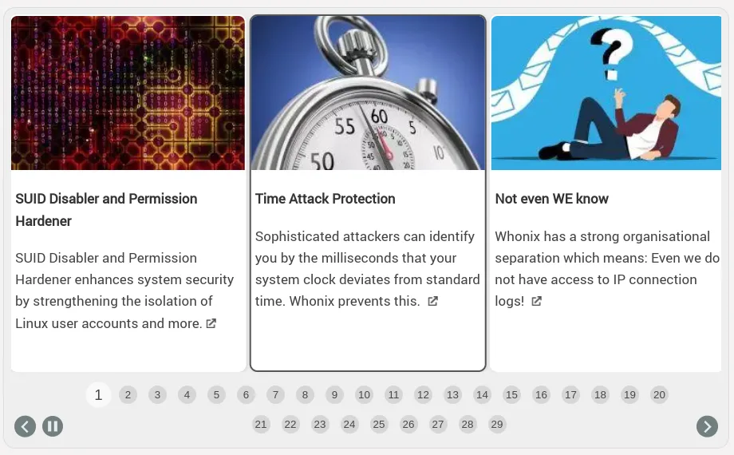 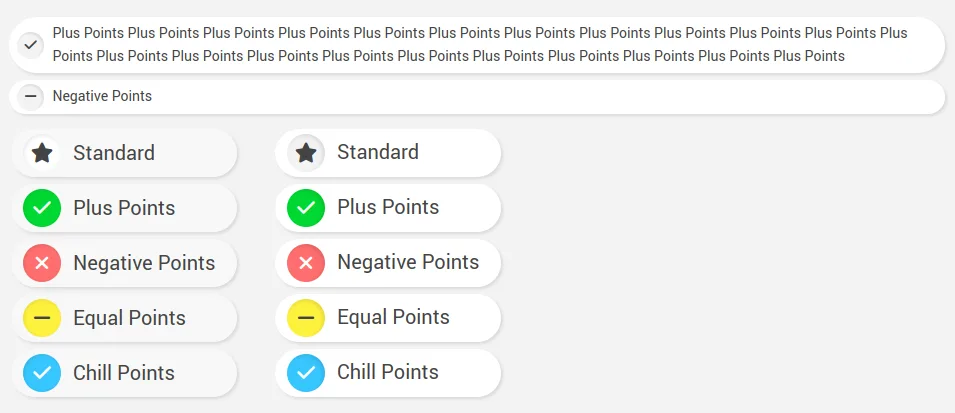 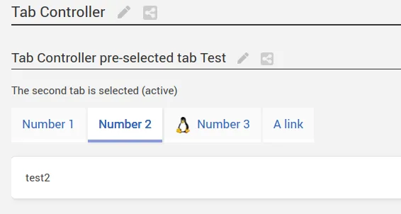
- A practical thumbnail gallery
- Beautiful quotations
- A template specifically for Videos
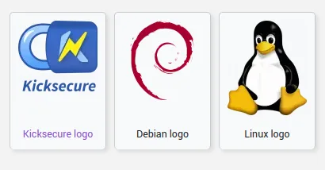 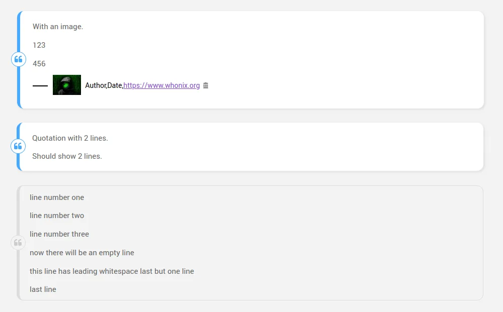 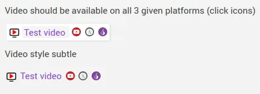
- Greatly improving the standard Wikitext Editor
- High level autosave feature for Wikitext Editor
- A sophisticated Debugging Modal accessible for all users
- Making everything fully responsive
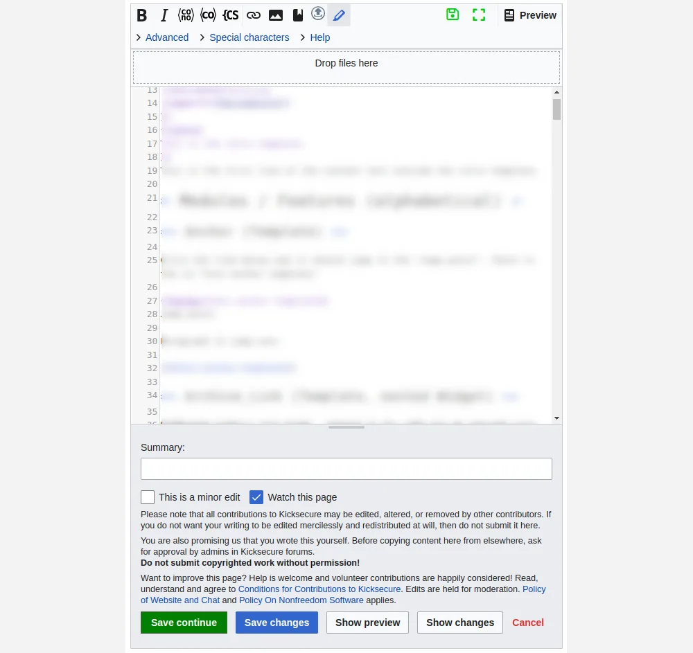 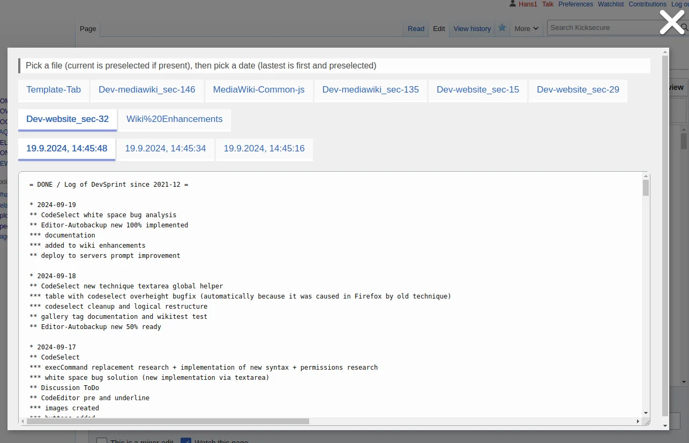 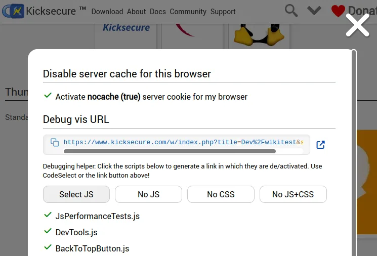 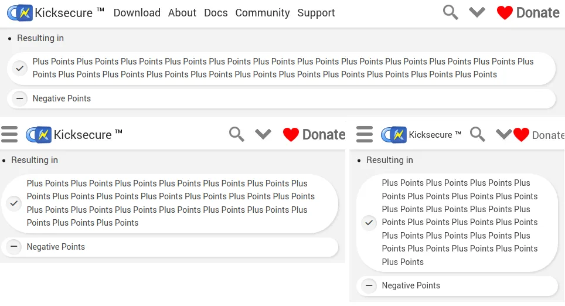
- A beautiful navigation template
- Custom Scrollbars with horizontal scroll elements for optimal visibility and accessibility
- A Scroll-to-top button
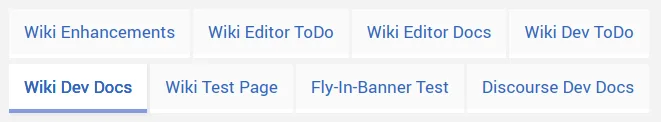 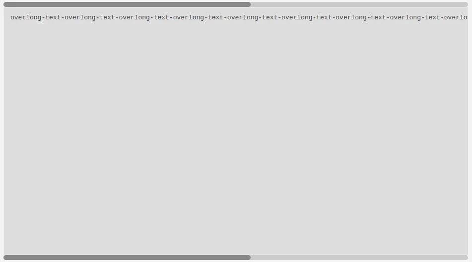
- Stylized info boxes
- Greatly enhanced Archive links
- Quality of life improvements like our ScrollAutoWrapper which protects tables and images from overwidth
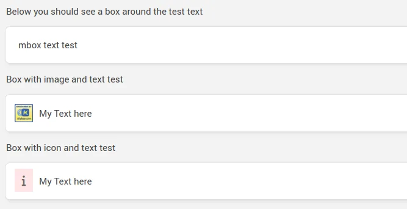 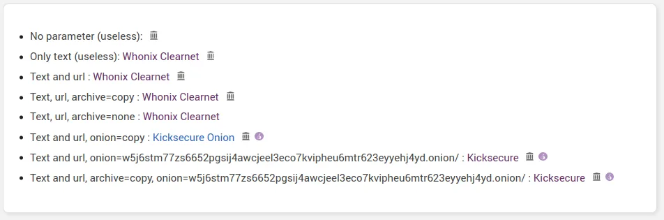 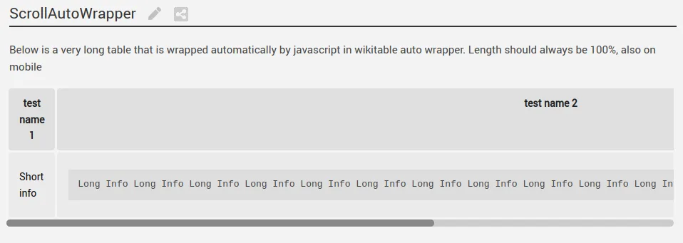
Installed Mediawiki Extensions
Apart from our own original upgrades, we have hand-picked and installed numerous extensions to introduce more features to all users and to increase accessibility. The pre-installed extensions of the MediaWiki standard installation are omitted here for brevity.
- CodeMirror improves the editor experience with optional syntax highlighting
- Comments allows user comments on pages where the special comments-tag is present
- ContactPage offers a comprehensive and easy way for visitors to contact our team
- CookieToBodyClass is a MediaWiki extension created by our team. This allows developers to mirror cookies as a class for the body element, which is used to prevent "style jumps" when the page is loading. Here is the documentation for CookieToBodyClass
- CookieWarning implements the EU-mandatory warning for users that cookies are used
- CSS allows custom CSS to be added to specific pages by developers to improve the user experience
- DarkMode offers the option for users to view the page in dark mode / night mode
- DisableAccount gives admins the power to ban malicious accounts and thereby secure the integrity of the wiki
- Flagged Revisions offers visitors, even anonymous ones, the ability to edit our pages and contribute, and gives these contributions to editors and admins for a safe revision before publication
- HeadScript allows us to implement custom CSS, JS, favicons, other libraries, fontAwesome, etc. for more functionality on the wiki
- LinkSuggest suggests links to editors, making the editing process a little bit faster and more efficient
- LinkToArchive adds to external links on the wiki an automatic link of the Web Archive version of this URL
- Lockdown improves wiki security by offering a more finely grained restriction model
- MsUpload introduces a handy drag-and-drop upload area for files to improve the editor experience
- New Signup Page enhances MediaWiki's default signup page
- Previews displays preview popups when the user hovers over a link
- Revision Slider adds a more comfortable, more practical slider interface to the diff view for editors
- Rotten Links helps keep the wiki clean by preventing dead links on the wiki by showing the admin a table of all external links on the wiki with their status
- User Merge allows the admin to merge different user accounts, for example, if a user created duplicate accounts by accident, account reconciliation, and other scenarios alike that might occur for contributors and other users
- Widgets offers developers the opportunity to add true HTML fragments to our pages. This is used to create well-designed special pages for our users that would not be achievable with the standard wiki syntax
- WikiSEO allows us to create and maintain high-level SEO optimizations for our wiki so they can be found more easily by new users